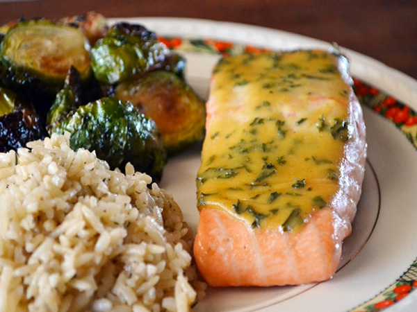

Chronicles Of A Young Mom
Home Page
Salmon with Mustard Sauce

Prep time: 10 min Cook time: 15 min Servings: 4
Ingredients:
- 4 (6 ounce) salmon steaks
- 1/4 teaspoon pepper
- 1 cup dry white wine
- 2 shallouts, minced
- 3 tablespoons minced fresh dill
- 1/4 cup nonfat plain yogurt (or sour cream)
- 1/4 cup Dijon mustard
- 2 tablespoons honey
- 1/8 cup lemon juice
Directions:
- Preheat oven to 400.
- Place salmon steaks in a large, deep baking pan; sprinkle w/ pepper and cover with wine. Sprinkle with minced shallots.
- Bake for 12 to 15 minutes, basting often with wine.
- While salmon is baking, in a small bowl mix together dill, yogurt, mustard, honey, and lemon juice until smooth.
- After salmon is done, serve with creamy mustard sauce over top.